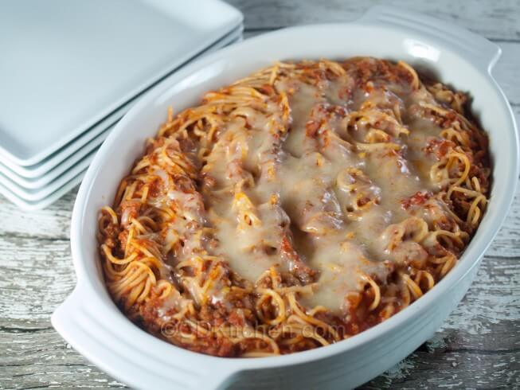

Baked American Spaghetti

Description
A delicious spaghetti dinner, baked in a casserole for convenience.
Ingredients
- 1 pound lean ground beef
- 1 large onion, chopped
- 1 clove garlic, peeled and quartered
- 1 can (15 ounce size) diced tomatoes, undrained
- 1 can (8 ounce size) low-sodium tomato sauce
- 1 1/2 cup water
- 2 teaspoons dried Italian seasoning
- 1 1/2 teaspoon salt
- 8 ounces uncooked spaghetti or linguine pasta, broken into thirds
- 3/4 cup shredded Cheddar cheese or Monterey Jack cheese
Steps
- Preheat the oven to 350 degrees F.
- Heat a large skillet over medium heat. Add the ground beef, onion, and garlic and cook, stirring frequently, until the beef is no longer pink. Drain off any excess grease.
- Stir in the tomatoes, tomato sauce, water, Italian seasoning, and salt. Bring the mixture to a simmer. Stir in the broken pasta and let cook for 5 minutes stirring occasionally.
- Transfer the beef mixture to a baking dish. Cover with foil and bake at 350 degrees F for 40 minutes. Remove the foil and sprinkle the top of the spaghetti with the cheese. Return to the oven and bake uncovered for 10 minutes or until the cheese is melted and the casserole is bubbly.
- Serve hot.